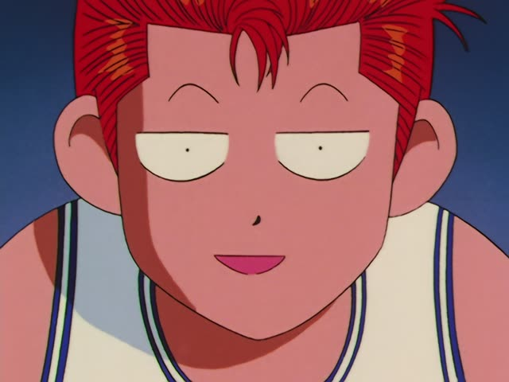
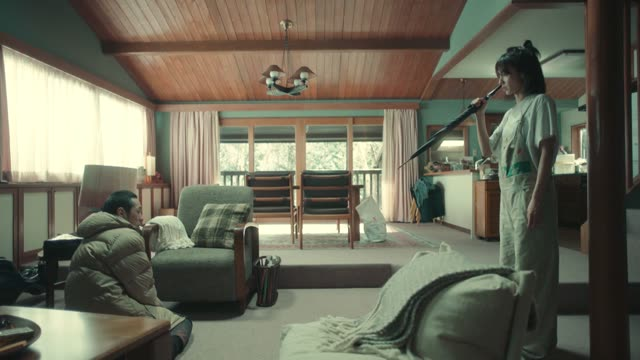
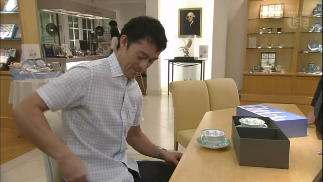

いくら

I'm Taking the Day Off · Episode 2
おいくらですか？
"How much is it?"
いくら asks how much, for money. It goes where the price would go: これはいくら？ = "This is how much?"
On this card, the price question comes at a small izakaya. The お in front makes it sound softer and more polite: おいくらですか is what you say to staff.
Casual: いくら？ on its own is enough.

Slam Dunk · Episode 20
これ いくら？
"How much is this?"
The casual form: これ (this) いくら (how much). On this card, he points at his friend's things and asks the price, as if they were for sale.
Quick Examples
At a market stall, pointing at a bag.
このかばんはいくらですか？
"How much is this bag?"
いくら sits where the price would go: このかばんは3000円です.
PoliteYour friend shows you their new shoes.
それ、いくらだった？
"How much were they?"
Past price: いくらだった (casual), いくらでしたか (polite).
CasualGetting into a taxi.
駅までいくらぐらいですか？
"About how much is it to the station?"
ぐらい after it makes it "about how much".
PoliteThe waiter brings the bill. You ask your friend.
いくら？
"How much?"
Between friends, just いくら. No です, no か.
CasualA shop clerk tells you the total.
おいくらですか？
"How much is it?"
お in front makes it extra polite. You hear it a lot in shops.
PoliteWith and without
このかばんは3000円です。
"This bag is 3000 yen." You already know the price.
このかばんはいくらですか？
"How much is this bag?" Swap the price for いくら, add か.
Examples from Media
Vinland Saga · Episode 12
向こう岸への 渡し賃は いくらですか？
"How much is the fare to the other side?"
渡し賃: the fee for a ferry crossing.

Weakest Beast · Episode 6
いくらだったんですか？
"How much was it?"
いくら + だった ("was") = "how much was it?". んですか asks for the story.

Quartet · Episode 6
いくら とったんですか？
"How much did you take?"
Asking how much money was stolen. いくら comes first, before the verb.

Kekkon Dekinai Otoko · Episode 9
おいくらですか？
"How much is it?"
お + いくら + ですか: the polite shop question, "how much is it?".
Samurai Champloo · Episode 18
えっと いくらだろう。
"Um, how much is it, I wonder..."
いくら + だろう: wondering about the price.
Samurai Champloo · Episode 2
おいくら？
"How much?"
おいくら without です: soft, but casual.
Teasing Master Takagi-san · Season 2, Episode 8
…ていうか いくら当たったの？
"...wait, how much did you win?"
いくら + 当たった (won, in a lottery).
Vinland Saga · Episode 14
いくらするんだろう この指輪。
"I wonder how much this ring costs."
いくらする: "cost how much". んだろう: "I wonder".